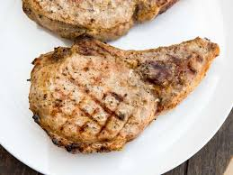

Lasagna Recipe

I'm surprised they have a recipe for just pan frying pork chop lol
Ingredients
- 4 boneless pork chops
- salt and freshly ground black pepper
- all-purpose flour, two table spoons
- 1/2 cup cooking oil
Steps
- Season both sides of pork chops with salt and pepper, and sprinkle with flour on both sides.
- Heat oil in a skillet.
- Add pork chops and pan fry until brown.
- When the edges of the chops turn brown, turn and cook the other side until no longer pink.